Reich Research
A Living Record of the Lives of Our Loved Ones
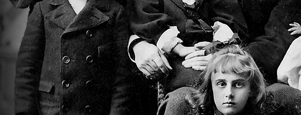
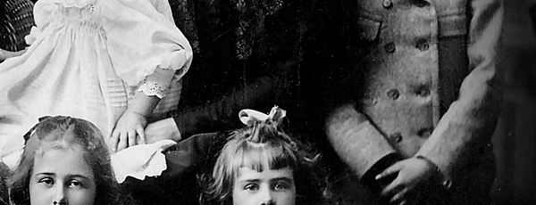
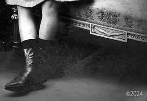
Reich Research is a genealogical effort based in Europe. The site serves as a depository for genealogical records, historical accounts, and memories of those who have passed. Genealogical research is conducted thoroughly using such resources as FamilySearch.org, JewishGEN, and more. Reich Research writes articles and memorials based on research documents that include but are not limited to: census records, marriage records, death certificates, military records, naturalization papers, ship manifests, and more.
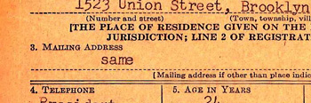
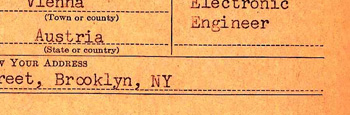
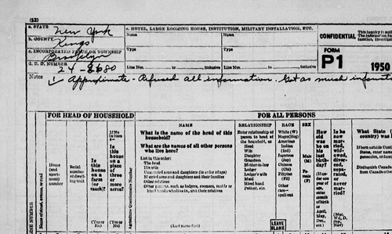
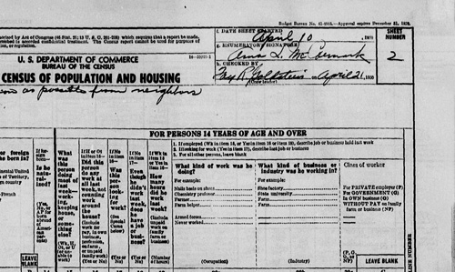
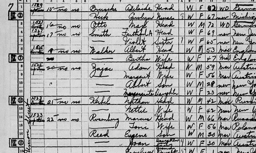
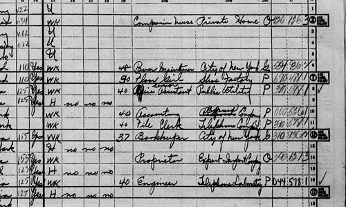
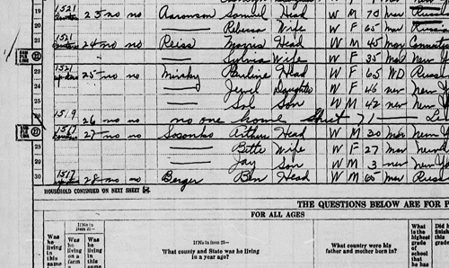
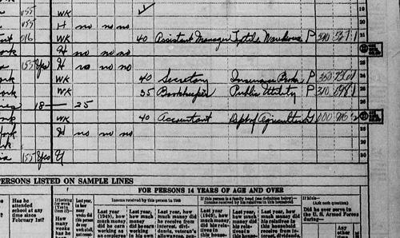
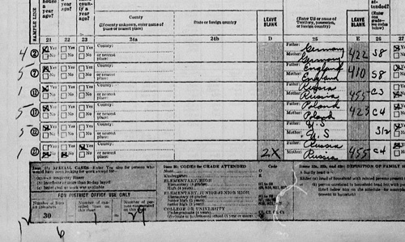
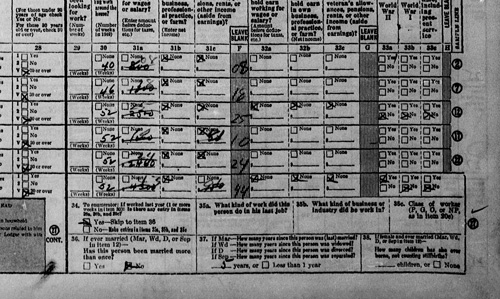
Photography plays a huge role in genealogical and memorial publication. Many photos are received in poor condition. Photographs are painstakingly restored using Adobe Photoshop exclusively. Colorization is done digitally by hand. No AI is ever used in photo restoration. Hours are spent on each photograph to bring the subject back to life as much as possible in pictures.
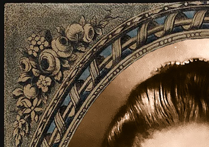
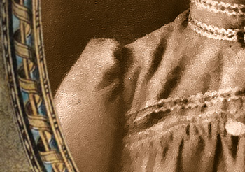
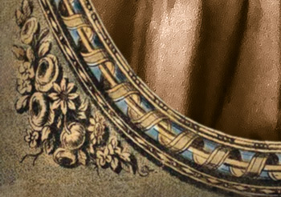
Below is a small sample of the articles and memorials that have been published here. Some memorials are private and are only accessible to family members who have the URL address. Efforts are made to keep private memorials from being crawled and indexed by internet search engines.
Reich Research Articles and Memorials
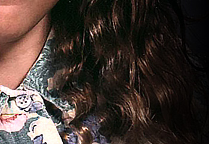
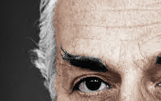
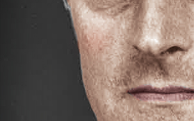
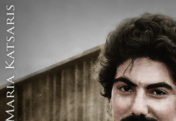
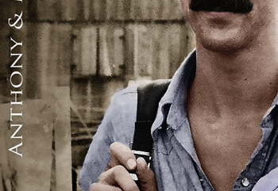
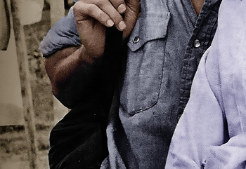
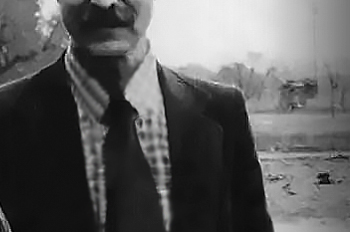
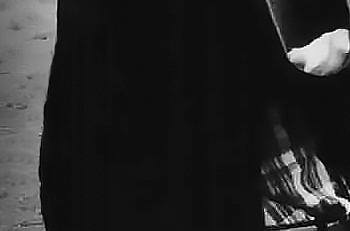
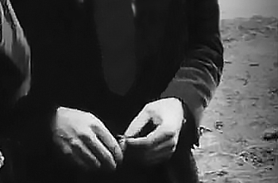
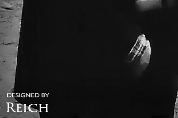
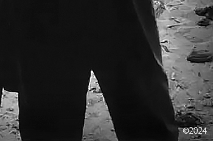
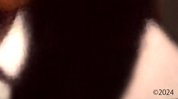
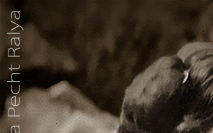
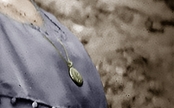
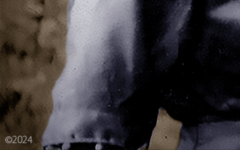